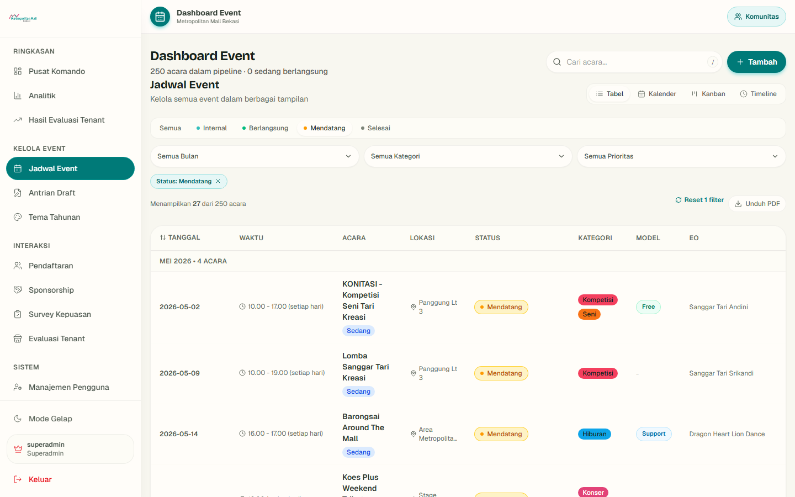
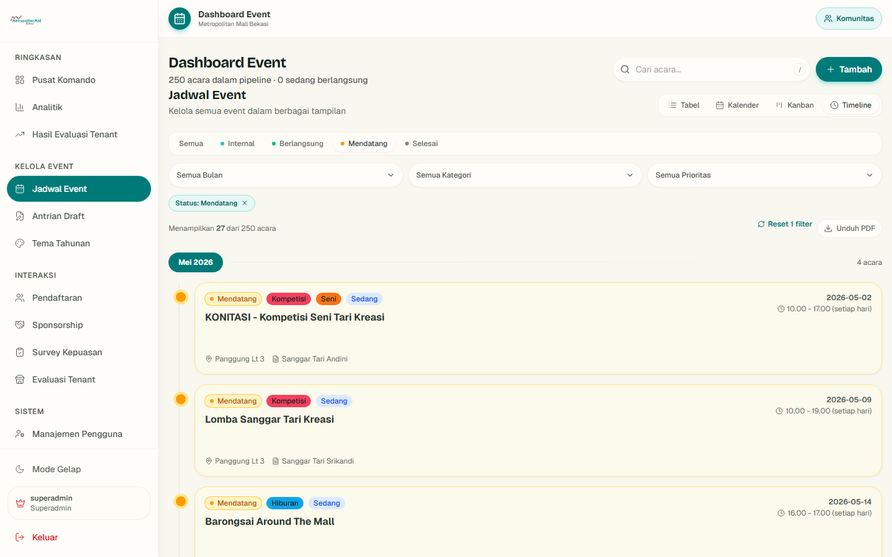
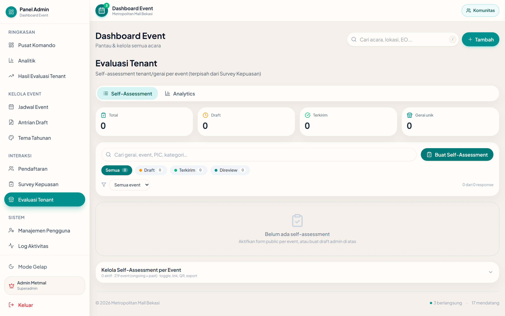
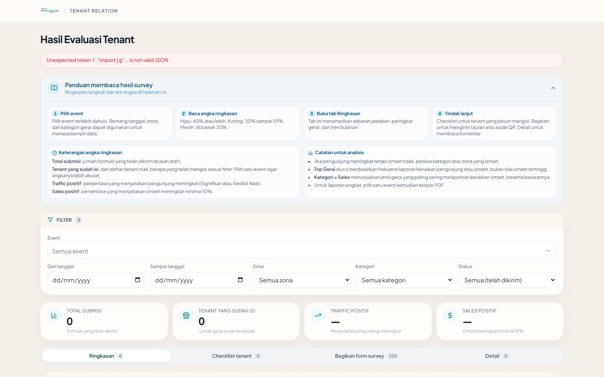
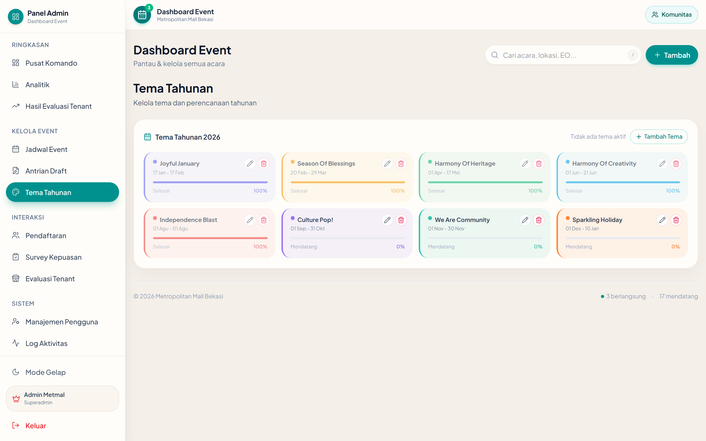
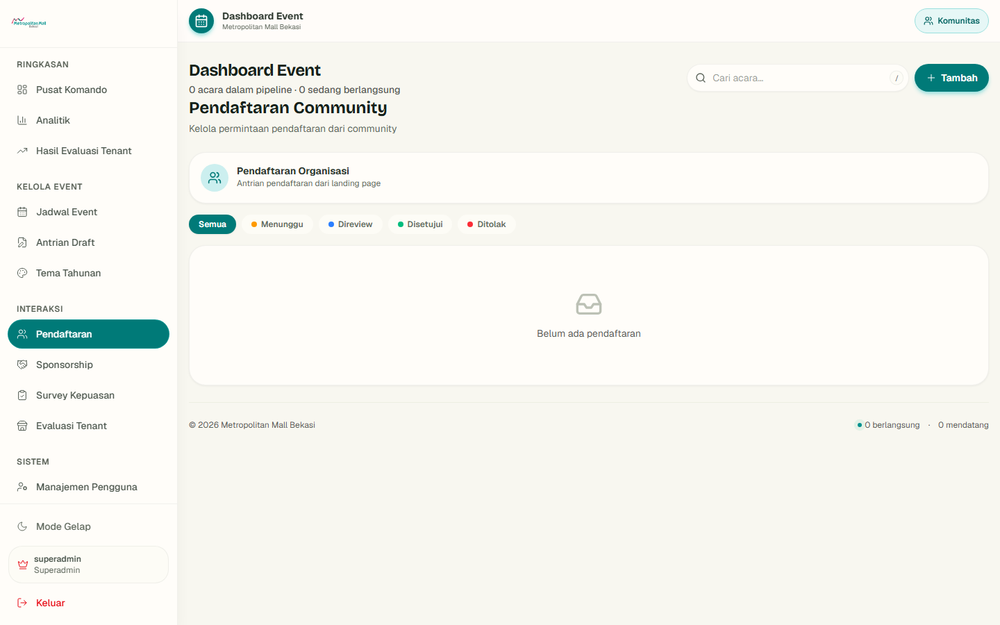
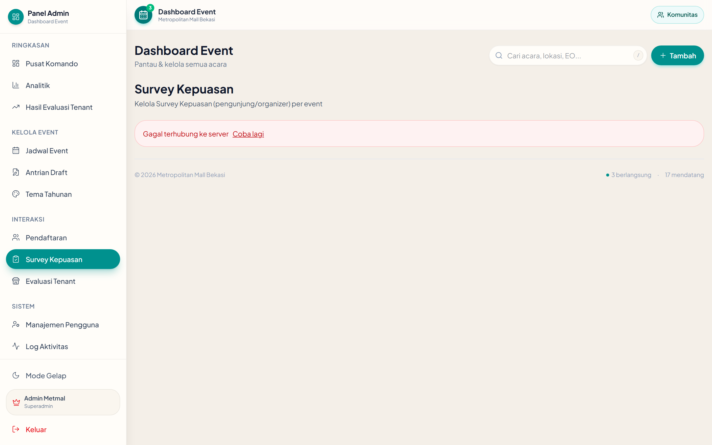
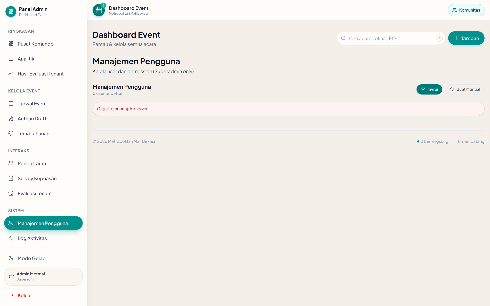
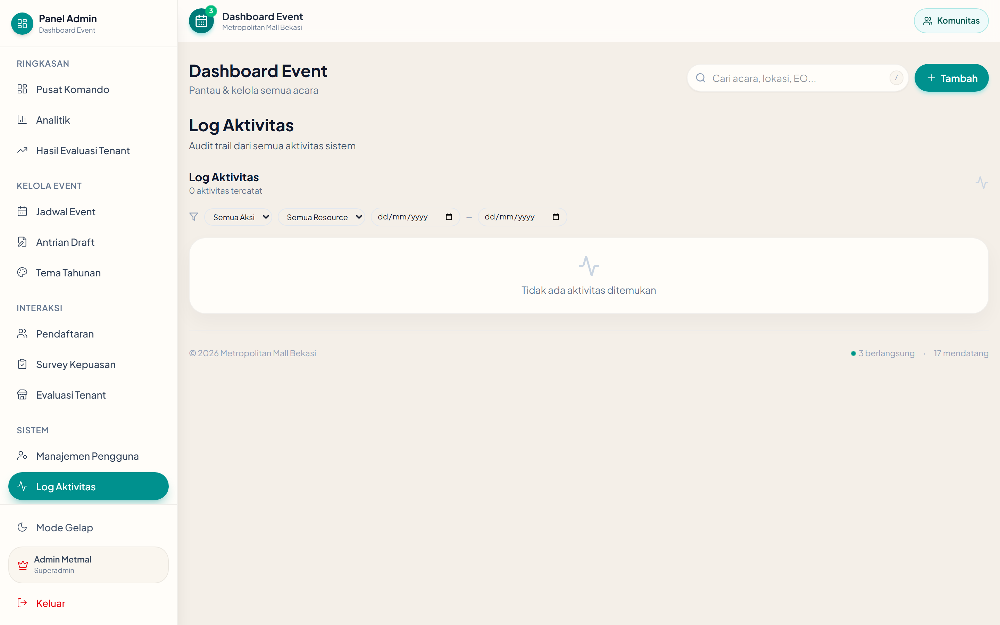

Jadwal event dalam empat mode
Satu data event, empat cara melihat — halaman Jadwal Event di dashboard admin menampilkan mode Tabel, Kalender, Kanban, dan Timeline dari data yang sama (236 acara).




Dampak event kini terukur
Bukan sekadar aplikasi kalender — ini platform event yang terukur dampaknya. Survey tenant mengubah event dari sekadar “sudah berjalan” menjadi “terbukti berdampak”.
Traffic tenant terukur
Survey mencatat apakah event mendorong kenaikan kunjungan ke tenant.
Sales tenant terukur
Dampak terhadap penjualan tercatat sebagai data, bukan asumsi.
Dasar keputusan event
Data dampak jadi acuan memilih dan mengevaluasi event ke depan.



Data per Agustus 2026 (Supabase) — 38 evaluasi terisi (38/38), terkonsentrasi di 2 event uji coba: Bekasi Criterium 2.0 (22) & METMAL BEKASI KIDS FUN RUN 2026 (16). Hasil dari jawaban kategorikal; kolom persentase numerik belum dipakai.
Sedang berjalan, menuju publik
Ujicoba internal
Fitur diuji dan dipakai oleh tim internal untuk memastikan alur berjalan baik.
Stabilisasi
Penyempurnaan fitur dan keandalan berdasarkan temuan uji coba.
Uji terbatas
Mengajak tenant dan staff dalam uji coba terbatas untuk validasi lapangan.
Rilis publik
Dibuka untuk pengunjung, tenant, dan staff secara penuh.






